No matter if you're a data analyst or a data scientist, first of all, the first thing you need is access to the data. Without it, you can't build charts, reports, or models. Therefore, most companies store their data in databases. A database is the place where everyone can look for the data and use it when they need to. However, how do you actually get that data out of a database? That's where SQL comes in.
What is SQL? SQL stands for Structured Query Language. It's a simple but powerful language used to work with data stored in databases. With SQL, you can initially retrieve specific data. Next, you can filter specific rows or columns, join many tables, and even transform the data to suit your needs. Once the data is ready, you can use it to create visualizations that highlight key insights and trends. Consequently, you can make better decisions.
In this article, I'll walk you through the first 10 SQL scripts that are worth to learn. These are the basics that will help you start working with real data and answering real questions right away. To start with, these scripts cover the most common tasks you'll come across when working with data. These examples will help you build a solid foundation in SQL. Therefore, with them, you'll be ready to work with real data and easily answer practical questions.
Let's Dive into the Top 10 SQL Scripts
In the following section, we'll explore the 10 most useful SQL scripts every beginner should learn. Specifically, these examples are practical, beginner-friendly, and designed to reflect real-world data tasks. As you go through each script, you'll not only learn how they work, but also when and why to use them. So, let's begin with the foundation - the SELECT statement.
1. SELECT Statement
Why:
To begin with, this is the foundational query - it retrieves data from a table. While SELECT * returns all columns from the table, in real analysis, you'll often want to specify only the columns you need. This approach makes your queries more efficient and readable.
Syntax:
SELECT column_name(s) FROM table_name;
Example:
SELECT * FROM sales;
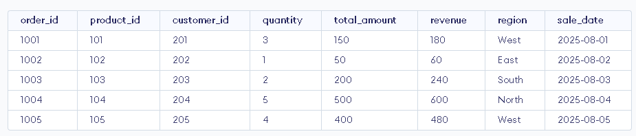
In this example, the query selects all columns and all rows from the sales table. In other words, the asterisk (*) acts as a shortcut that tells SQL to return everything - every piece of data available in the table.
SELECT product_id, customer_id, quantity FROM sales;
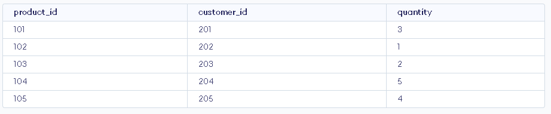
On the other hand, this query selects only three specific columns - product_id, customer_id, and quantity - from the sales table. As a result, it returns only the data relevant to your analysis.
2. Filtering Rows with WHERE
Why:
To narrow down your data, the WHERE clause is essential - it filters rows based on specific conditions. In particular, it specifies the search criteria for the rows returned by the query. As a result, you'll use it constantly to focus on particular segments of your dataset - such as a certain region, product, or date range.
Syntax:
SELECT column_name(s) FROM table_name WHERE condition;
Example:
SELECT * FROM orders WHERE order_date BETWEEN '2025-07-31' AND '2025-08-04';
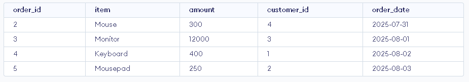
In this example, the query selects all columns from the orders table. However, it returns only the orders placed between July 31 and August 4, 2025, inclusive. Here, the BETWEEN keyword is used to filter rows within a date range (or numeric range), making it easier to extract time-specific data.
SELECT product_id, customer_id, quantity FROM sales WHERE quantity >= 3;
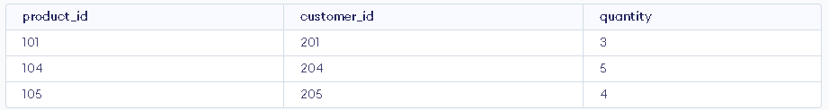
= 3 from sales">Similarly, this query selects three specific columns - product_id, customer_id, and quantity - from the sales table. More importantly, it filters the data to show only rows where the quantity is 3 or more. To clarify, the >= operator means "greater than or equal to."
3. Sorting Results with ORDER BY
Why:
The ORDER BY clause in SQL is used to sort the results of a query. By default, it sorts in ascending (ASC) order. However, you can specify descending order using DESC. This becomes especially useful when you want to identify top-performing items, the most recent dates, or any other kind of ranked data.
Syntax:
SELECT column_name(s) FROM table_name ORDER BY column1, column2 ASC|DESC;
Example:
SELECT product_id, revenue FROM sales ORDER BY revenue DESC;
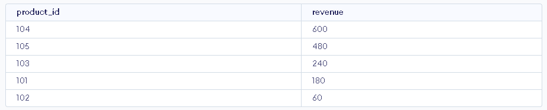
In this case, the query selects two columns - product_id and revenue - from the sales table. Then, it uses ORDER BY revenue DESC to sort the results by revenue in descending order. As a result, the products with the highest revenue appear at the top of the result set.
SELECT product_id, quantity FROM sales WHERE quantity >= 3 ORDER BY quantity ASC;
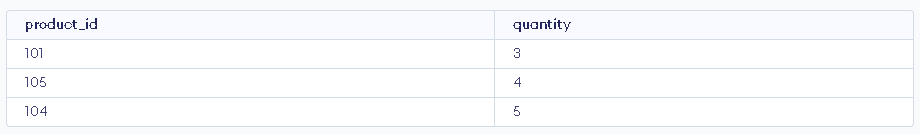
= 3 ORDER BY quantity ASC">Similarly, this query selects product_id and quantity from the sales table. First, the WHERE clause filters out any rows where the quantity is less than 3. Next, ORDER BY quantity ASC sorts the remaining rows in ascending order - that is, from the lowest to the highest quantity.
4. Counting Rows
Why:
The COUNT() function returns the number of items found in a group. In other words, it gives you a quick total of how many records exist. COUNT(*) will be essential for reporting or understanding the dataset size. Alternatively, you can specify a column name instead of the asterisk symbol (*). However, it's worth remembering that NULL values will not be counted when you use a specific column.
Syntax:
SELECT COUNT(column_name) FROM table_name WHERE condition;
Example:
SELECT COUNT(*) FROM orders;
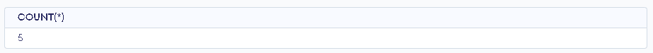
In this example, the query counts all rows in the orders table. The COUNT(*) function includes every row, regardless of whether any columns contain NULL values.
SELECT COUNT(product_id) FROM sales WHERE quantity >= 5;
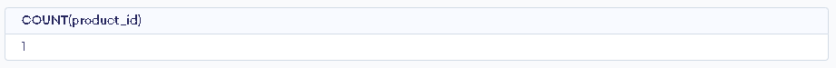
= 5">Meanwhile, this query counts the number of rows in the sales table where the quantity is 5 or more. COUNT(product_id) only includes rows where product_id is not NULL. In practice, since product_id is typically present, it effectively counts all the filtered rows.
5. Grouping and Aggregation (GROUP BY)
Why:
The GROUP BY clause lets you summarize data by grouping rows that share the same value in one or more columns. For instance, you can group sales by region or orders by customer. As a result, this is key to turning raw data into insights. The GROUP BY statement is typically used together with aggregate functions like COUNT(), SUM(), AVG(), MAX(), or MIN(). Together, they help you generate meaningful summaries from your data.
Syntax:
SELECT column_name(s) FROM table_name GROUP BY column_name(s);
Example:
SELECT region FROM sales GROUP BY region;
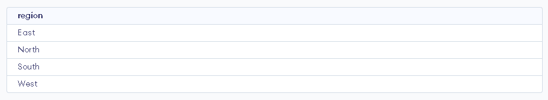
This query groups the rows in the sales table by the region column. It returns one row for each unique region. Since no aggregate functions are used here, it basically lists all different regions without duplicates.
SELECT region, SUM(revenue) AS total_revenue FROM sales GROUP BY region;
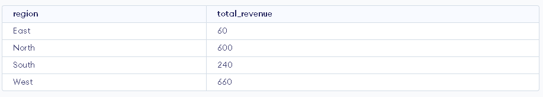
In contrast, this query not only groups the data by region, but also calculates the total revenue for each group using the SUM() function. Therefore, the result shows each region along with its corresponding total revenue.
SELECT product_id, AVG(quantity) AS avg_quantity FROM sales WHERE region = 'West' GROUP BY product_id HAVING AVG(quantity) > 2;
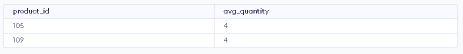
2 in West region">First, the WHERE clause filters the sales data to include only rows where the region is 'West'. Then, the query groups the data by product_id and calculates the average quantity sold for each product. Finally, the HAVING clause filters to show only products with an average quantity greater than 2 in the West region.
6. Filtering Groups with HAVING
Why:
The HAVING clause is used to filter aggregated results, which sets it apart from the WHERE clause. While WHERE filters individual rows before any grouping takes place, HAVING filters groups of rows after aggregation. In other words, it allows you to apply conditions to groups created by the GROUP BY clause. You can use HAVING with aggregate functions such as COUNT(), SUM(), AVG(), MAX(), or MIN() to filter out groups that don't meet certain criteria. This becomes especially useful when you want to focus only on significant or relevant aggregated results.
Syntax:
SELECT column_name, AGGREGATE_FUNCTION(column_name) FROM table_name GROUP BY column_name HAVING AGGREGATE_FUNCTION(column_name) condition;
Example:
SELECT region, SUM(revenue) AS total_revenue FROM sales GROUP BY region HAVING SUM(revenue) > 200;
In this query, the data is grouped by region, and the total revenue for each group is calculated. Then, the HAVING clause filters those results to include only the regions where the revenue exceeds 200.
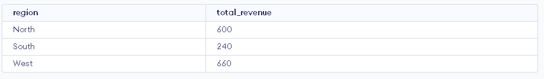
200">SELECT product_id, COUNT(order_id) AS total_orders FROM sales WHERE region = 'West' -- Filters rows before grouping GROUP BY product_id HAVING COUNT(order_id) > 5; -- Filters groups after aggregation
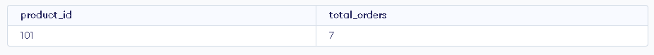
5 in West region">In this example, at first, the WHERE clause filters the sales data to include only rows where the region is 'West'. Then, the query groups the data by product_id and counts how many orders each product has. Finally, the HAVING clause filters the groups to show only products with more than 5 orders in the West region.
7. UNION Operator
Why:
The UNION operator is used to combine the result sets of two or more SELECT statements into a single result set. By default, it removes duplicates. If you want to include duplicates, you can use UNION ALL. Each SELECT statement must have the same number of columns. The columns must be in the same order and have compatible data types.
Syntax:
SELECT column1, column2 FROM table1 UNION SELECT column1, column2 FROM table2;
Example:
SELECT product_id FROM sales UNION SELECT item -- Assuming `item` in `orders` refers to product_id in text FROM orders;
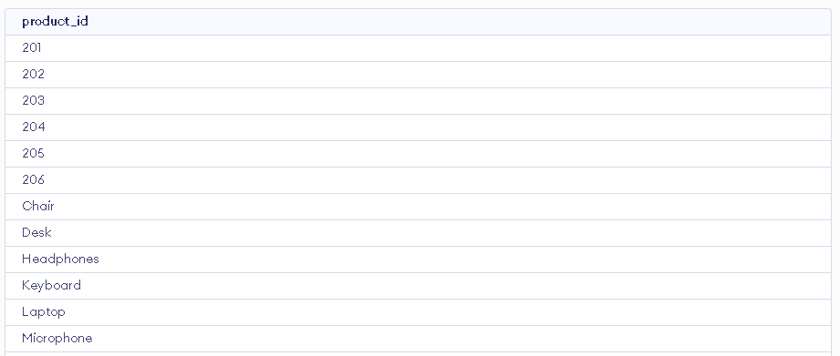
This combines product IDs from sales and orders. It removes duplicates and assumes item represents product IDs.
SELECT customer_id FROM orders UNION ALL SELECT customer_id FROM sales;
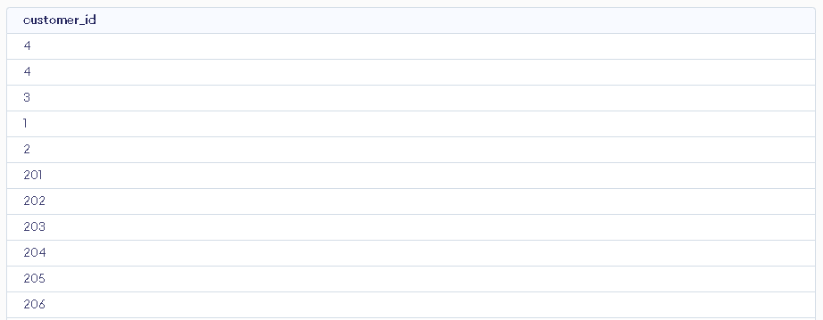
This returns all customer IDs from both tables, including duplicates, which is helpful for spotting repeat customers or tracking frequency.
8. Joining Tables
Why:
In relational databases, data is stored across multiple related tables. To perform meaningful analysis, you often need to bring this data together. That's where joins come in - they allow you to combine rows from two or more tables based on related columns. In short, joins are a foundational SQL skill for working with real-world datasets.
There are several types of joins, each serving a different purpose:
- (INNER) JOIN — Returns only the records with matching values in both tables.
- LEFT (OUTER) JOIN — Returns all records from the left table and only the matched records from the right table.
- RIGHT (OUTER) JOIN — Returns all records from the right table and only the matched ones from the left.
- FULL (OUTER) JOIN — Returns all records when there is a match in either table.
If you want to dive deeper into SQL joins, feel free to check out my blog post on the topic here.
Syntax:
SELECT table1.column_name, table2.column_name FROM table1 JOIN table2 ON table1.common_column = table2.common_column;
Example:
SELECT s.product_id, c.customer_id, s.revenue FROM sales s INNER JOIN customers c ON s.customer_id = c.customer_id;
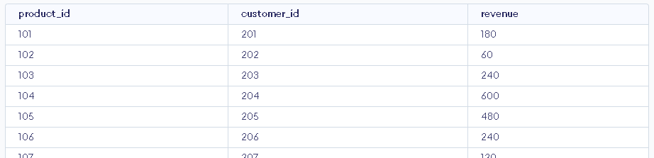
This query combines data from two tables: sales (aliased as s) and customers (aliased as c). The INNER JOIN links rows where the customer_id is the same in both tables. It returns the order ID, the customer's name, and the revenue for each matching record.
SELECT c.last_name, AVG(o.amount) AS avg_order FROM customers c INNER JOIN orders o ON c.customer_id = o.customer_id INNER JOIN sales s ON c.customer_id = s.customer_id WHERE s.region = 'West' GROUP BY c.last_name;
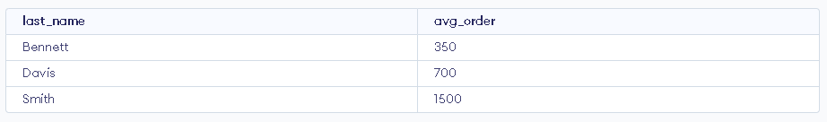
This query joins the customers table (alias c) with the orders table (alias o) and sales table (alias s) using the customer_id. It filters for customers in the 'West' region. Then, it groups the results by customer name and calculates the average order amount for each customer.
9. Using Aliases for Clarity
Why:
Aliases (AS) make results more readable. In SQL, an alias is a short or temporary name you give to a table or column in a query. Basically, it helps make your query easier to read and write. For example, you can use aliases to rename long column names or to make table names shorter.
Syntax:
SELECT column_name AS alias_name -- alias used on the column FROM table_name; -- or SELECT column_name(s) FROM table_name AS alias_name; -- alias used on the table
Example:
SELECT customer_id, first_name || ' ' || last_name AS full_name FROM customers;
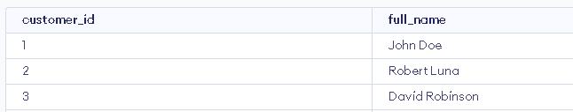
This query selects the first_name and last_name columns from the customers table. The AS full_name part gives a new temporary name (alias) to the column in the result. So, instead of showing the column header as first_name, it will appear as full_name.
SELECT c.customer_id AS Customer_ID, s.revenue AS Sale_Amount FROM sales s JOIN customers c ON s.customer_id = c.customer_id;
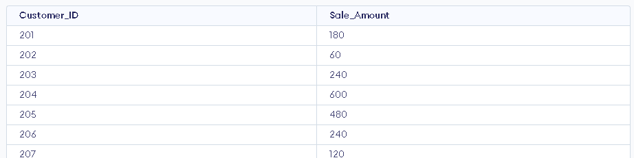
This query joins the sales table (aliased as s) with the customers table (aliased as c). It selects the customer's name (customer_name) and revenue (revenue) from the joined tables. Using AS, the columns are renamed in the results: customer_name becomes name and revenue becomes sale_amount.
10. CASE WHEN, ELSE and THEN
Why:
The CASE statement in SQL is useful when you want to add conditional logic to your queries. In other words, it's like using an "if-else" statement in programming. With it, you can create custom labels, categories, or logic based on the values in your data. As a result, your query results become easier to understand and more informative.
Syntax:
SELECT column_name, CASE WHEN condition1 THEN result1 WHEN condition2 THEN result2 ELSE default_result END AS alias_name FROM table_name;
Example:
SELECT order_id, total_amount, CASE WHEN total_amount >= 1000 THEN 'High' WHEN total_amount >= 500 THEN 'Medium' ELSE 'Low' END AS sale_category FROM sales;
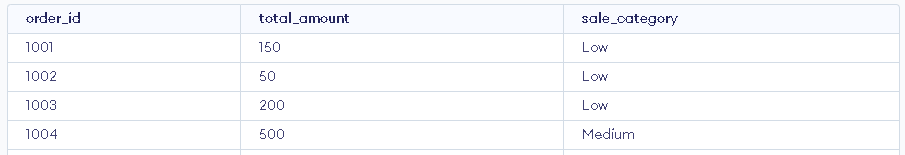
This query selects the order_id and total_amount from the sales table. It also uses the CASE WHEN statement to create a new column called sale_category. If the total_amount is 1,000 or more, the category is labeled 'High'. If the amount is between 500 and 999, it's labeled 'Medium'. Otherwise, it's labeled 'Low'.
Let's try to combine all of them!
Now that you've explored the essential SQL tools - SELECT, WHERE, GROUP BY, HAVING, JOIN, and ORDER BY - it's time to put them all together in one powerful query.
Let's break down the story behind this query:
You want to identify customers in the West region who have placed multiple orders, check their average order amount, and classify their total sales as High, Medium, or Low based on spending.
SELECT c.last_name AS name, COUNT(o.order_id) AS total_orders, AVG(o.amount) AS avg_order_amount, CASE WHEN SUM(s.total_amount) >= 100 THEN 'High' WHEN SUM(s.total_amount) >= 200 THEN 'Medium' ELSE 'Low' END AS sales_category FROM customers c INNER JOIN orders o ON c.customer_id = o.customer_id INNER JOIN sales s ON o.order_id = s.order_id WHERE s.region = 'West' GROUP BY c.last_name HAVING COUNT(o.order_id) > 2 ORDER BY avg_order_amount DESC;
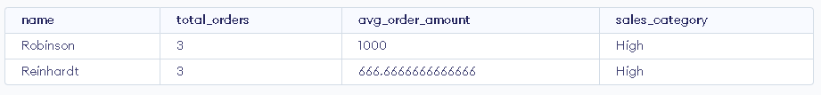
This query is a great example of how SQL lets you ask layered questions and get clear, insightful answers - all in one go.
You're not just pulling data - you're turning it into a story.
Summary
To sum up, learning SQL is important for anyone working with data. Whether you are a data analyst or a data scientist, SQL helps you access and work with data in databases. First, you learned how to select and filter data. Next, we looked at grouping, aggregating, and joining tables. In addition, we explored using HAVING, AVG(), aliases, and the CASE statement.
These basics are essential to help you write clear and useful queries. With them, you can work confidently with real data and find answers to practical questions. Finally, by combining these tools, you can create powerful queries. This allows you to turn raw data into valuable insights and smart decisions.